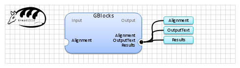

| Name | GBlocks | |
| View |  | |
| Publication(s) | Talavera, G., and Castresana, J. (2007). Improvement of phylogenies after removing divergent and ambiguously aligned blocks from protein sequence alignments. Systematic Biology 56, 564-577.
Castresana, J. (2000). Selection of conserved blocks from multiple alignments for their use in phylogenetic analysis. Molecular Biology and Evolution 17, 540-552. | |
| Website | http://molevol.cmima.csic.es/castresana/Gblocks.html | |
| Description | Version 0.91b, January 2002 Copyright © Jose Castresana
Eliminates poorly aligned positions and divergent regions of an alignment of DNA or protein sequences. These positions may not be homologous or may have been saturated by multiple substitutions and it is convenient to eliminate them prior to phylogenetic analysis. Gblocks selects blocks in a similar way as it is usually done by hand but following a reproducible set of conditions. The selected blocks must fulfill certain requirements with respect to the lack of large segments of contiguous nonconserved positions, lack or low density of gap positions and high conservation of flanking positions, making the final alignment more suitable for phylogenetic analysis. | |
| Input (1) |
Alignment | |
| Output (3) |
Results Alignment OutputText | |
| Keywords (1) | Sequences, Column, Selection | |
| Sample workflow | Gblocks.properties.db |